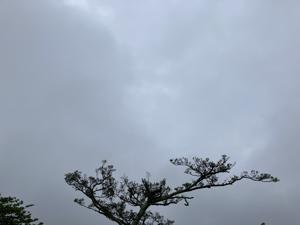
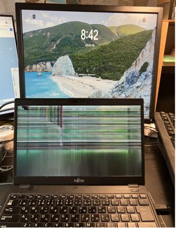
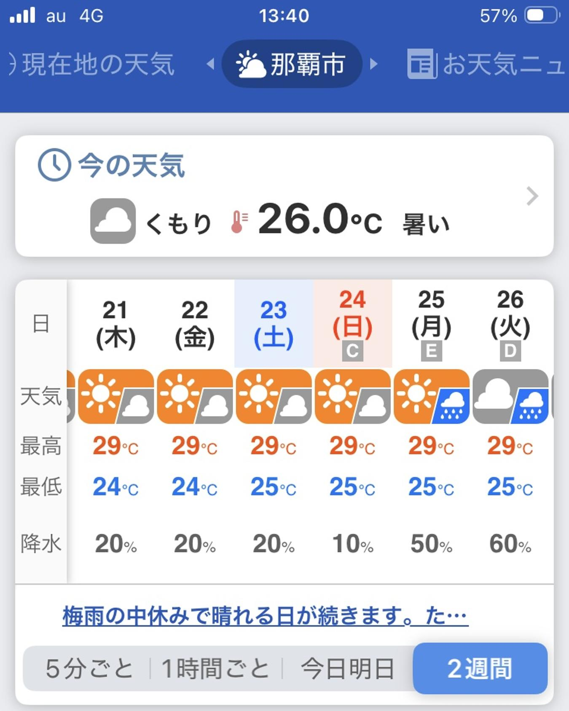

うるがいの話 ある日
最新: 壊れたモニタ【うるがいの話 ある日】とは 一日だけのプログです
『うるがいの話』の最新一日だけのプログで、通信料が少なく経済的だ。カニの画像をクリックすると全ての日付が載る『うるがいの話』サイトを表示します
|
|
【うるがいの話】 うるがい(ｳﾙｶﾞｲ urugai)とは、『もずくがに』の名前でとても大きくなります。 |
|---|---|
|
|
【カミマヤーの話】 猫のことを方言でマヤーといいます。カミマヤー（kamimayaa）とは、神の猫のことです。 |
|
【たながぁの音楽】 たながぁ（ﾀﾅｶﾞｰ tanagaa）とは手長えびのことで、何種類かあり大きいのは車 エビぐらいになります。 |

|
【ぶながぁの話】 ぶながぁ(ﾌﾞﾅｶﾞｰ bunagaa)とは、赤い髪の毛、赤い身体、そして身長は１ｍ２０ｃｍ ぐらい、川の蟹を食べているの目撃された。場所は沖縄県国頭郡大宜味村のと ある村僕の隣近所に住んでいる爺さんから、聞いた話です。 |
|
|
【ギーマの話】 ギーマ(giima)とは、山原の里山に咲くスズランに似た、 花を付けます。実は食べられます、 気が付くと口の周りが紫になっています。 |
2026年05月13日 (水）壊れたモニタ
18:00

『あー、このモニタなら１０万ほど、取り敢えず、確認してみま
す』、『この型の製品の発売から、５年過ぎているので修理は行
なえないということです』、あ、そうですか、外付けのモニタ繋
げれば使えるので・・・・。
壊れたパネルサイズが１３．３型ワイド、後ろが私のＰＣ２で使
っているモニタに繋げた状態。

２０１９年１２月８日に購入、１週間も経たないうちにモニタが
壊れ、修理に出した。子供の扱いが、雑なんでしょ。この前、台
湾に行った時、たまたま、子供がノートパソコン壊れたと言った
ので、持ち帰った物。修理できない状況を報告、子供が家に帰っ
て来た時に外付けモニタを接続し利用することで調整する。
再来週まで晴れの天気予報、本当にそうなるでしょうか。
